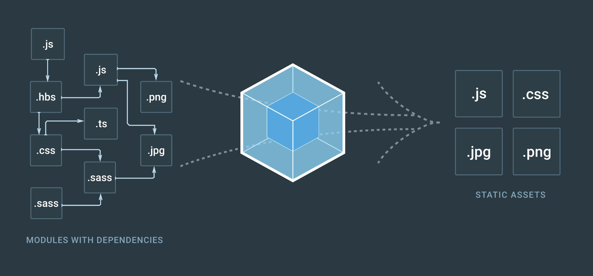
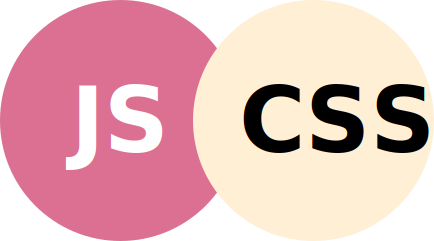
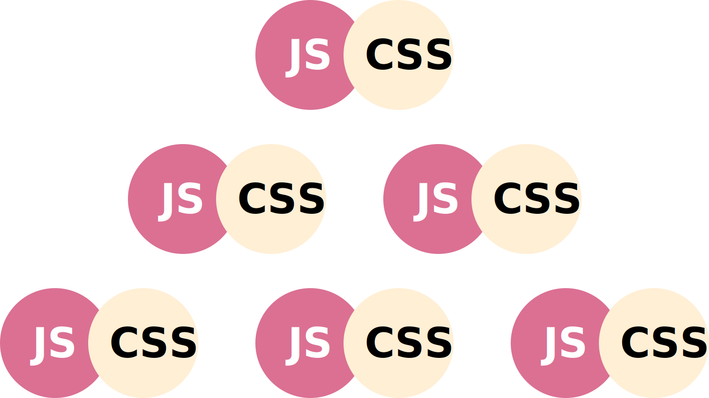

layout: true class: slides-centered --- --- class: slides-chapter, theme-whiskey ## Vanilla CSS, at scale, is not maintainable --- layout: true class: theme-whiskey, slides-left --- name: cover # The Case for CSS Modules Markus Dobmann<br> Peerigon GmbH<br> [@_flootr](https://twitter.com/_flootr) <img id="slide-cover-img" src="./assets/peerigon-logo.png" width="400"> --- layout: true class: slides-centered ---  --- ```css #document .content p:first-child a strong { color: red; } ``` --- ```scss #document { .content { p:first-child { a { strong { color: red; } } } } } ``` --- > CSS is a simple mechanism for adding style [...] to Web documents. .slides-quote-ref[https://www.w3.org/Style/CSS/Overview.en.html] --- class: slides-chapter, theme-whiskey ### Web documents vs. Web apps --- ### Nearly every JavaScript framework embraces the usage of components as a basic building block of web applications. (Ember, Vue, Angular, React, Polymer, etc...) --- class: slides-chapter, theme-whiskey ### Global Scope vs. Maintenance --- Well known from JavaScript land: ## Avoid Globals! (at all costs, imho) --- > Global variables and function names are an **incredibly bad idea**. .slides-quote-ref[https://www.w3.org/wiki/JavaScript_best_practices#Avoid_globals] --- ## I want to avoid globals in CSS, too! --- ## `.Block__Element--Modifier { ... }` (BEM) --- - OOCSS - SMACSS - SUIT - ... --- ```css /* Block component */ .btn {} /* Element that depends upon the block */ .btn__price {} /* Modifier that changes the style of the block */ .btn--orange {} .btn--big {} ``` --- ```html <a class="btn btn--big btn--orange" href="#"> <span class="btn__price">€ 9,99</span> <span class="btn__text">Subscribe</span> </a> ``` --- ## A block, actually, is a component --- class: slides-chapter, theme-whiskey ## The Age of Components --- ## Tooling  --- ```javascript import ‘./MyComponent.css’; export default () => ( <div className="MyComponent"> <div className="MyComponent__Icon">Icon</div> // ... </div> ); ``` --- ### CSS and images are private to a component ---  ---  --- ``` components/ MyComponent/ MyComponent.scss MyComponent.js icon.svg ``` --- class: slides-chapter, theme-whiskey ## Introducing CSS Modules --- ```js import ‘./MyComponent.scss’; // becomes... import styles from ‘./MyComponent.scss’; ``` --- ```js import styles from './MyComponent.scss'; export default () => ( <div className={styles.container}> <div className={styles.icon}>Icon</div> </div> ); ``` --- ### local by default ```javascript .container { ... } .icon { ... } // becomes /* globally unique classes */ ._2cSbuLtnX_cOrYSxeyUZme { ... } ._25YjCJi7EFpLmCzz5eu4tz { ... } ``` --- ```js loader: ‘css-loader?localIdentName=[name]__[local]’ ``` ```javascript import styles from './MyComponent.scss'; styles = { container: 'MyComponent__container', icon: 'MyComponent__icon' }; ``` --- ## Bäm! 💣💥 (Bem for free) --- ## Real Isolation --- ## Responsible Reuse --- ## What else do we get from CSS Modules? --- ### composes ```css .heading { font-size: 2rem; } .custom-heading { composes: header; color: 'palevioletred'; } ``` --- ### dependencies ```css .custom-heading { composes: heading from './typography.css'; } ``` --- ## Benefits of CSS Modules --- ### Increased authoring speed --- ### Less fear of change (being comfortable of making changes) --- ### Maintainable by default --- ### Faster debugging --- ### Simpler onboarding --- ## Do I really need this? --- ### Depends on your project 1. Is your markup going to be running inside of a third party environment? 2. Are you working on a team? 3. Are you incorporating third party CSS resets or libraries in your CSS? 4. Do you want your styles to look correct no matter what? --- ## css-modules/postcss-modules For use with server side rendering and static pages --- # 👍 --- ## Thanks 😊👋